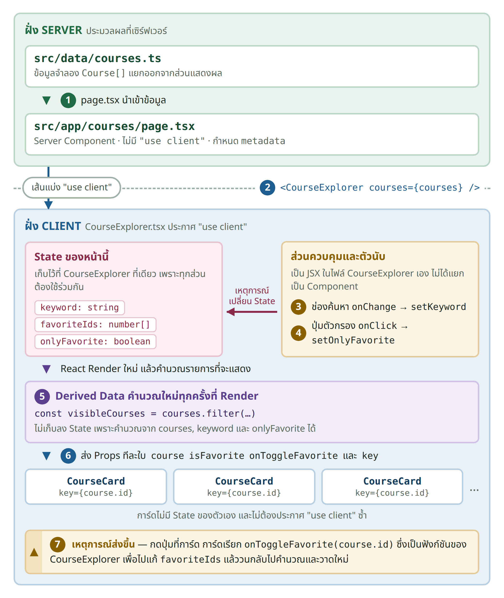

ใบงานปฏิบัติรายวิชา 10301231 เว็บเทคโนโลยี
State, Events และ Component Communication
ชื่อ-สกุล |
| รหัสนักศึกษา |
|
ใบงานครั้งที่ผ่านมาสร้างหน้าเว็บที่แสดงข้อมูลได้แล้ว แต่หน้าเว็บยังไม่ตอบสนองต่อผู้ใช้ ใบงานนี้จะเปลี่ยนโปรเจกต์ next-course-hub ให้ผู้ใช้สามารถโต้ตอบกับหน้าเว็บได้ โดยเพิ่มช่องค้นหารายวิชา ปุ่มบันทึกรายการโปรด ตัวนับจำนวนรายการโปรด และตัวกรองแสดงเฉพาะรายการโปรด ผ่านแนวคิดหลักสามเรื่องคือ State, Event และการสื่อสารระหว่าง Component
คำศัพท์ | ความหมายและตัวอย่างในใบงานนี้ |
|---|---|
Server Component และ Client Component | หน้า page และ layout เป็น Server Component โดยค่าเริ่มต้น ไฟล์ที่ประกาศ "use client" คือจุดเริ่มขอบเขต Client และไฟล์ที่ถูก import ต่อจากจุดนั้นจะอยู่ฝั่ง Client ด้วย ส่วนที่ใช้ State และ Event ต้องอยู่ในขอบเขตนี้ |
State | ข้อมูลที่ Component เก็บรักษาไว้ระหว่างการ Render เมื่อเปลี่ยนค่าผ่านฟังก์ชัน set… React จะ Render Component นั้นใหม่ ในใบงานนี้คือ keyword, favoriteIds และ onlyFavorite |
Event และ Event Handler | Event คือเหตุการณ์ที่ผู้ใช้ทำ เช่น คลิกหรือพิมพ์ ส่วน Event Handler คือฟังก์ชันที่เขียนไว้รองรับเหตุการณ์นั้น ในใบงานนี้ตั้งชื่อขึ้นต้นด้วย handle เช่น handleToggleFavorite |
Props | ค่าที่ Parent Component ส่งให้ Child Component โดย Child อ่านได้อย่างเดียวและแก้ไขไม่ได้ เช่น course และ isFavorite |
Callback Props | Props ที่เป็นฟังก์ชัน Parent เตรียมไว้ให้ Child เรียกใช้เพื่อรายงานเหตุการณ์กลับ ในใบงานนี้ตั้งชื่อขึ้นต้นด้วย on เช่น onToggleFavorite |
Controlled Input | ช่องกรอกที่ค่า value มาจาก State และมี onChange นำค่าที่ผู้ใช้พิมพ์กลับเข้า State ทำให้ State เป็นแหล่งข้อมูลจริงเพียงแหล่งเดียว |
Lifting State Up | การย้าย State ไปไว้ที่ Parent Component ร่วมกัน เมื่อหลายส่วนต้องใช้ค่าเดียวกัน ในใบงานนี้คือเก็บ favoriteIds ไว้ที่ CourseExplorer ไม่ใช่ที่ CourseCard |
Derived Data | ค่าที่คำนวณจาก State หรือ Props ที่มีอยู่แล้ว จึงไม่ต้องเก็บเป็น State เพิ่มอีกหนึ่งค่า เช่น visibleCourses และจำนวนรายการที่พบ |
Immutable Update | การอัปเดตด้วยการสร้างค่าใหม่แทนการแก้ค่าเดิม เช่น ใช้ [...prevIds, id] แทน prevIds.push(id) |

next-course-hub/ |
ไฟล์ | ชนิด | หน้าที่ |
src/app/courses/page.tsx | Server Component | กำหนด metadata เตรียมข้อมูล และส่งต่อให้ Client Component |
src/components/CourseExplorer.tsx | Client Component | ส่วนของการค้นหารายวิชา ซึ่งทำหน้าที่เก็บ State ทั้งหมดของหน้านี้ และจัดการ Event |
src/components/CourseCard.tsx | Client โดยอัตโนมัติ | แสดงข้อมูลหนึ่งรายวิชาและรายงานเหตุการณ์กลับไปที่ Parent |
src/data/courses.ts | ข้อมูล | เก็บข้อมูลจำลอง แยกออกจากส่วนที่แสดงผล |
src/types/course.ts | Type | กำหนดรูปแบบข้อมูลรายวิชาไว้จุดเดียว ใช้ร่วมกันทุกไฟล์ |
src/components/CourseExplorer.tsx
"use client"; |
ใน App Router ทุกไฟล์ .tsx เป็น Server Component โดยค่าเริ่มต้น หมายความว่าโค้ดถูกประมวลผลที่ฝั่งเซิร์ฟเวอร์แล้วส่ง HTML มาให้เบราว์เซอร์ ใบงานที่ผ่านมาจึงทำงานได้โดยไม่ต้องประกาศสิ่งใดเพิ่มเติม เพราะหน้าเว็บเพียงแสดงข้อมูลเท่านั้น แต่เมื่อใดที่ต้องใช้ State หรือ Event Handler ซึ่งเป็นสิ่งที่เกิดขึ้นในเบราว์เซอร์ ไฟล์นั้นต้องถูกประกาศให้เป็น Client Component
เปิด src/app/courses/page.tsx แล้วเพิ่มปุ่มทดลองต่อไปนี้ไว้ใต้ <h1> โดยยังไม่ต้องแก้ไขส่วนอื่น
<button type="button" onClick={() => console.log("clicked")}> |
บันทึกไฟล์แล้วเปิด http://localhost:3000/courses จะพบข้อความ Error ในลักษณะนี้
ตัวอย่างข้อความ Error
Error: Event handlers cannot be passed to Client Component props. |
Error นี้ไม่ใช่ความผิดพลาดของโค้ด แต่เป็นข้อความที่ Next.js แจ้งเตือนว่ากำลังส่งฟังก์ชันจากฝั่งเซิร์ฟเวอร์ไปให้เบราว์เซอร์ ซึ่งไม่สามารถกระทำได้ เพราะฟังก์ชันไม่สามารถแปลงเป็นข้อมูลที่ส่งข้ามเครือข่ายได้
เพิ่มบรรทัดต่อไปนี้ไว้บรรทัดแรกสุดของไฟล์ ก่อน import ทุกบรรทัด แล้วบันทึกไฟล์อีกครั้ง จะพบว่าปุ่มทำงานได้และข้อความ Error ไม่ปรากฏอีก
บรรทัดแรกของ src/app/courses/page.tsx
"use client"; |
แนวทางที่เป็นมาตรฐานของ Next.js คือให้ page.tsx ยังเป็น Server Component แล้วแยกเฉพาะส่วนที่ต้องโต้ตอบออกเป็น Component ย่อยที่ประกาศ "use client"
ทดสอบ: แยกปุ่มออกเป็น Component ชื่อ ButtonComponent แล้วเรียกใช้งานในหน้า src/app/courses/page.tsx |
// ButtonComponent |
// course page |
หมายเหตุ เมื่อทดลองครบแล้ว ให้ลบปุ่มทดลองและบรรทัด "use client" ออกจาก src/app/courses/page.tsx เพื่อให้ไฟล์กลับมาเป็น Server Component ก่อนทำส่วนถัดไป
สร้างไฟล์ src/components/CounterDemo.tsx
src/components/CounterDemo.tsx
"use client"; |
นำไปใช้ในหน้า /courses/page.tsx
เพิ่มใน src/app/courses/page.tsx
import CounterDemo from "@/components/CounterDemo"; |
กิจกรรม 2.1 บันทึกผลการทดลอง
คลิกปุ่ม 3 ครั้ง
ค่าใน Console คือ ตัวเลขบนหน้าจอคือ
src/components/CounterDemo.tsx ฉบับแก้ไข
"use client"; |
ส่วนของโค้ด | ความหมาย |
useState(0) | สร้าง State พร้อมกำหนดค่าเริ่มต้นเป็น 0 และ TypeScript (number) |
count | ค่าปัจจุบันของ State ใช้อ่านอย่างเดียว ห้ามกำหนดค่าใหม่โดยตรง |
setCount | ฟังก์ชันสำหรับเปลี่ยนค่าของ State และแจ้ง React ให้ Render Component นี้ใหม่ |
onClick={handleClick} | ส่งฟังก์ชันให้ปุ่มเก็บไว้เรียกใช้เมื่อถูกคลิก handleClick ไม่มีวงเล็บต่อท้าย |
ทดลองเปลี่ยน handleClick เป็นสองรูปแบบต่อไปนี้ แล้วเปรียบเทียบผลเมื่อคลิกปุ่มหนึ่งครั้ง
// แบบที่ 1 |
กิจกรรม 2.3 ทดลองและสรุป
แบบที่ 1 คลิกหนึ่งครั้งได้ค่า คลิก 2 ครั้งได้ค่า คลิก 3 ครั้งได้ค่า
แบบที่ 2 คลิกหนึ่งครั้งได้ค่า คลิก 2 ครั้งได้ค่า คลิก 3 ครั้งได้ค่า
สร้างไฟล์ src/data/courses.ts โดยย้ายข้อมูลรายวิชาจาก page.tsx มาไว้ในไฟล์นี้ พร้อมกำหนด Type
src/data/courses.ts
import type { Course } from "@/types/course"; |
สร้างไฟล์ Component ให้รับรายวิชาผ่าน Props แล้วเก็บคำค้นไว้ใน State
src/components/CourseExplorer.tsx
"use client"; |
ส่วนของโค้ด | ความหมาย |
onChange | ทำงานทุกครั้งที่ผู้ใช้พิมพ์ เพื่อนำค่าล่าสุดกลับเข้า State |
ChangeEvent<HTMLInputElement> | Type ของ Event ที่ React ส่งมาให้ ระบุว่ามาจาก Element input |
event.target.value | ข้อความปัจจุบันในช่อง input ที่ผู้ใช้พิมพ์ |
แก้ไขไฟล์ src/app/courses/page.tsx ให้เป็น Server Component ที่อ่านข้อมูลแล้วส่งต่อผ่าน Props
src/app/courses/page.tsx
import type { Metadata } from "next"; |
src/components/CourseExplorer.tsx · ส่วนที่ 5 ของแผนผังโครง หลังฟังก์ชัน handle ทั้งหมด ก่อน return
const searchText = keyword.trim().____________(); |
src/components/CourseExplorer.tsx · ส่วนที่ 6 ของแผนผังโครง ภายใน return
{visibleCourses.length === 0 ? ( |
กิจกรรม 3.5 ทดสอบการค้นหา
กิจกรรม 3.6 เขียนส่วนแสดงผลของ CourseExplorer ด้วยตนเอง
นำหัวข้อ 3.4 และ 3.5 มาประกอบเข้าด้วยกัน โดยเขียนส่วน return ของ CourseExplorer ให้สมบูรณ์
// src/components/CourseExplorer.tsx ส่วน return |
เพิ่มปุ่มรายการโปรดที่การ์ดแต่ละรายการ พร้อมตัวนับจำนวนรายการโปรดที่ด้านบน หากเก็บสถานะรายการโปรดไว้ภายใน CourseCard แต่ละใบ ตัวนับจะไม่สามารถทราบจำนวนรายการที่ถูกเลือกได้ และจะกรองรายการโปรดไม่ได้ ดังนั้นต้องย้าย State ขึ้นไปไว้ที่ Parent Component ร่วมกัน ซึ่งในที่นี้คือ CourseExplorer
ทิศทาง | ส่งอะไร | ตัวอย่างในใบงานนี้ |
Parent ไปยัง Child | ข้อมูลผ่าน Props | course และ isFavorite |
Child กลับไปยัง Parent | ฟังก์ชันที่ Parent เตรียมไว้ (Callback Props) | onToggleFavorite |
src/components/CourseExplorer.tsx · ส่วนที่ 3 และ 4 ของแผนผังโครง
const [favoriteIds, setFavoriteIds] = useState<number[]>([]); |
ส่วนของโค้ด | ความหมาย |
useState<number[]>([]) | ระบุ Type ให้ชัดเจนว่าเป็น Array ของ number |
prevIds.includes(id) | ตรวจสอบว่ารายวิชานี้อยู่ในรายการโปรดหรือไม่ |
prevIds.filter(...) | สร้าง Array ใหม่ที่ไม่มี id นั้น ใช้สำหรับการนำออกจากรายการ |
[...prevIds, id] | สร้าง Array ใหม่จาก Array เดิม แล้วเพิ่มสมาชิกต่อท้าย ใช้สำหรับการเพิ่มรายการ |
เก็บเฉพาะ id | ไม่ต้องคัดลอกทั้ง Object รายวิชา ทำให้ State มีขนาดเล็กและไม่เกิดข้อมูลซ้ำซ้อน |
src/components/CourseCard.tsx
import type { Course } from "@/types/course"; |
key: ต้องใช้ key={course.id} ไม่ใช่ลำดับที่ของ Array เพราะเมื่อรายการถูกกรอง ลำดับที่ของแต่ละรายการจะเปลี่ยนไป React จะจับคู่ Component ไม่ถูกต้อง และสถานะบนหน้าจอจะสลับกัน |
กิจกรรม 4.4 ตรวจสอบการทำงานร่วมกัน
ตารางต่อไปนี้สรุปแนวปฏิบัติที่ใช้ตลอดใบงาน ซึ่งเป็นแนวทางเดียวกับที่เอกสารทางการของ Next.js และ React แนะนำ ใช้เป็นเกณฑ์ตรวจสอบผลงานของตนเองก่อนส่ง
หัวข้อ | แนวปฏิบัติ | ตัวอย่างในใบงาน |
|---|---|---|
ตำแหน่ง "use client" | ประกาศที่ Component ย่อยที่ต้องโต้ตอบ ไม่ประกาศที่ page หรือ layout | CourseExplorer.tsx |
การส่งข้อมูลข้ามเส้นแบ่ง | Server ส่งให้ Client ผ่าน Props ที่แปลงเป็น JSON ได้ | <CourseExplorer courses={courses} /> |
metadata ของหน้า | export จาก page.tsx ที่เป็น Server Component | export const metadata: Metadata |
การแยกไฟล์ | ข้อมูล Type และ Component แยกคนละไฟล์ตามหน้าที่ | data/ types/ components/ |
ชื่อไฟล์และ Component | PascalCase และ export default หนึ่งตัวต่อไฟล์ | CourseCard.tsx |
การนำเข้า Type | ใช้ import type เมื่อ import เฉพาะ Type | import type { Course } |
เส้นทางการ import | ใช้ Path Alias @/ แทนการอ้างอิงย้อนขึ้นด้วย ../../ | @/components/CourseCard |
ชื่อฟังก์ชันและ Props | ฟังก์ชันขึ้นต้นด้วย handle และ Props ขึ้นต้นด้วย on | handleToggleFavorite และ onToggleFavorite |
Type ของ Event | ระบุ Type ของ Event เมื่อแยกเป็นฟังก์ชันที่มีชื่อ | ChangeEvent<HTMLInputElement> |
key ของรายการ | ใช้ค่าที่ระบุตัวตนของข้อมูล ไม่ใช้ลำดับที่ของ Array | key={course.id} |
การอัปเดต State | สร้างค่าใหม่เสมอ และใช้ Updater Function เมื่ออิงค่าเดิม | [...prevIds, id] |
Derived State | ไม่เก็บสิ่งที่คำนวณได้ไว้ใน State | visibleCourses |
ปุ่มใน JSX | ระบุ type="button" เสมอเมื่อไม่ได้ใช้ส่งฟอร์ม | <button type="button"> |
การตรวจก่อนส่ง | ต้องผ่านการตรวจ lint การตรวจสอบ Type และการ Build | npm run lint |
ต่อยอดจากโจทย์ Favorite Bands ในใบงาน Component และ Props โดยใช้โปรเจกต์และ Component เดิม เปลี่ยนหน้าเว็บที่แสดงข้อมูลวงดนตรีเพียงอย่างเดียว ให้ผู้ใช้ค้นหา กรอง และติดตามวงดนตรีได้